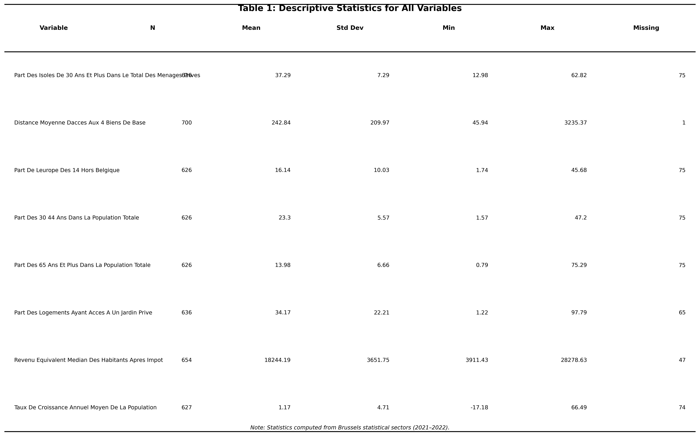
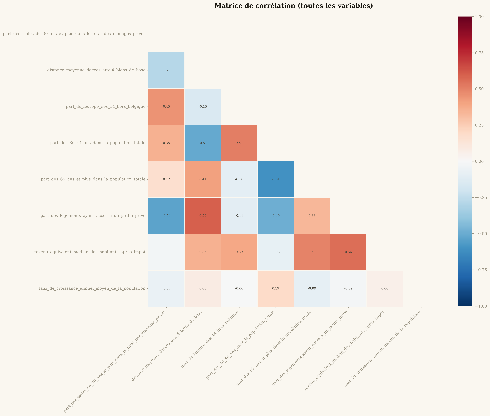
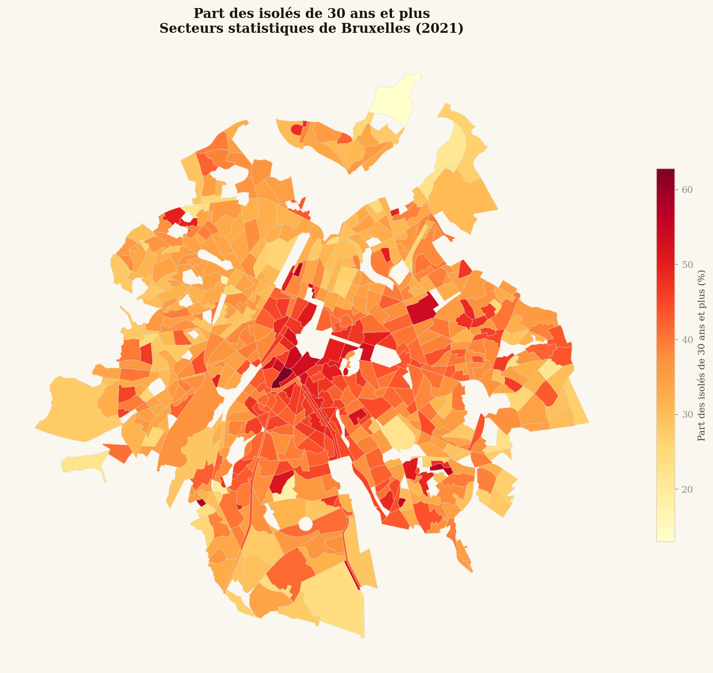
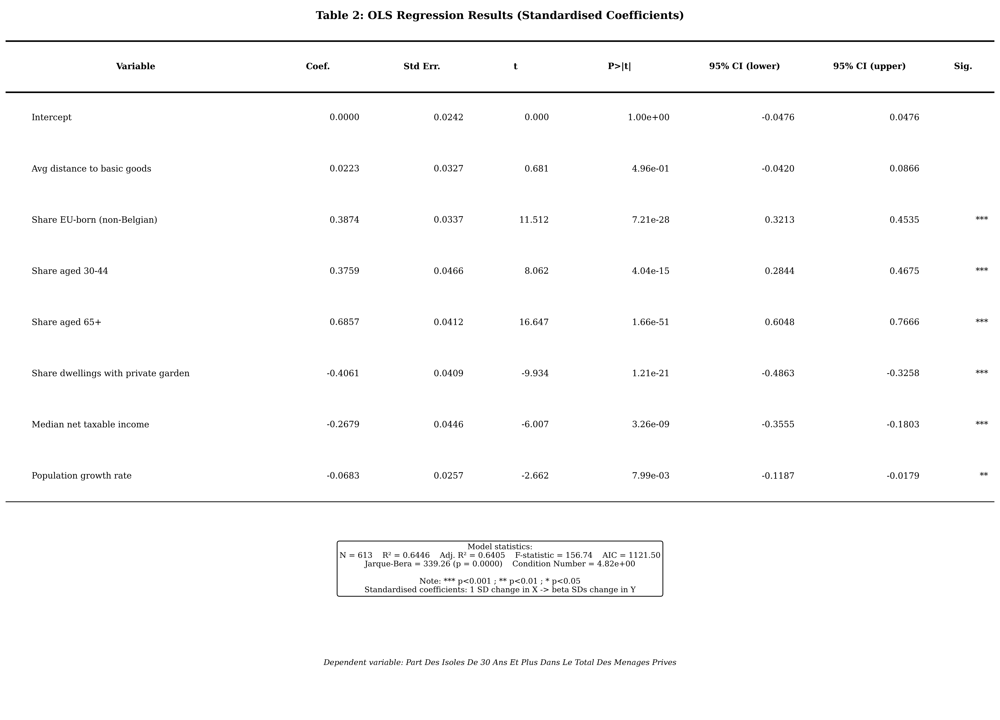
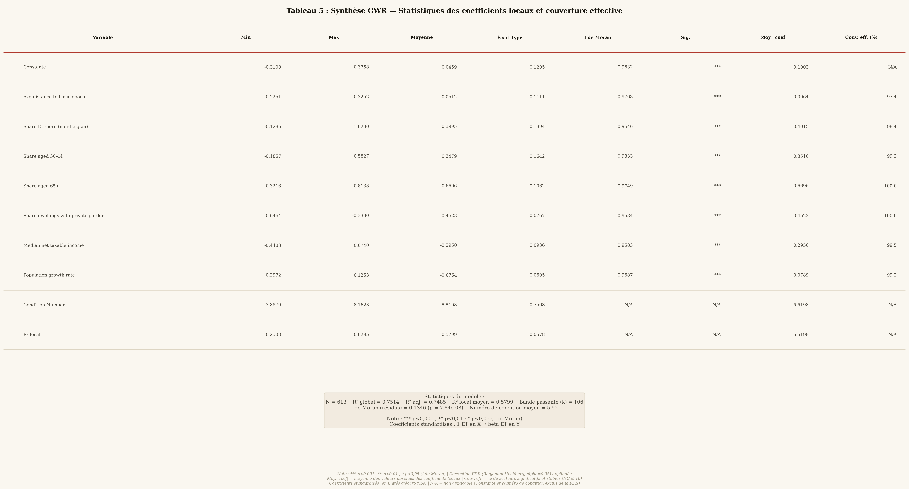
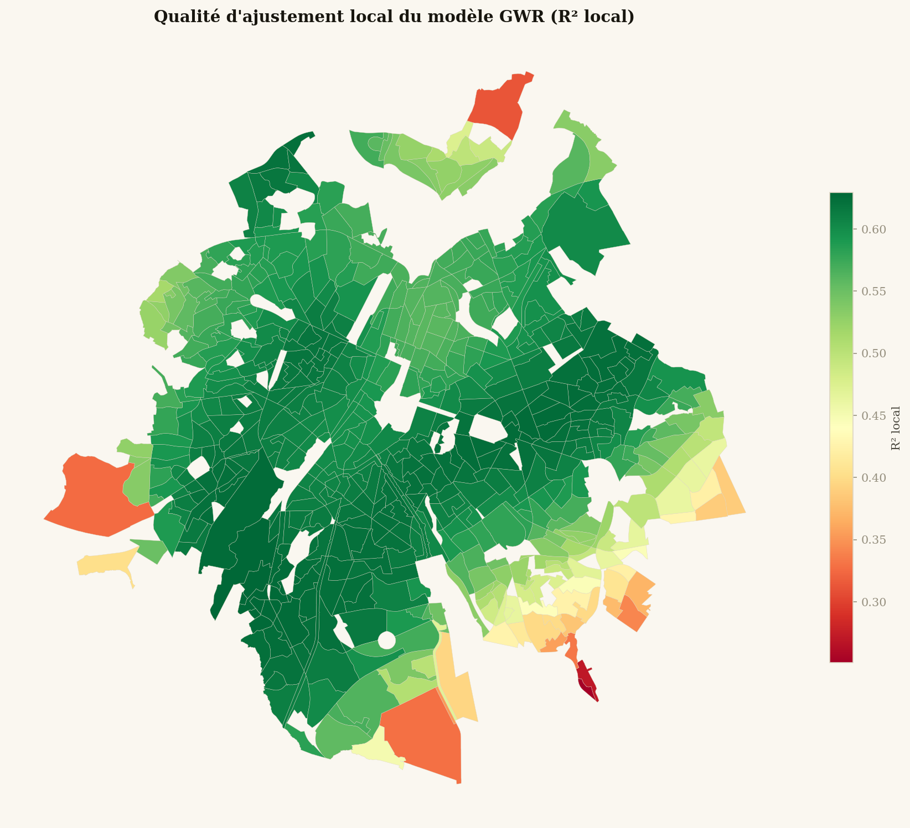
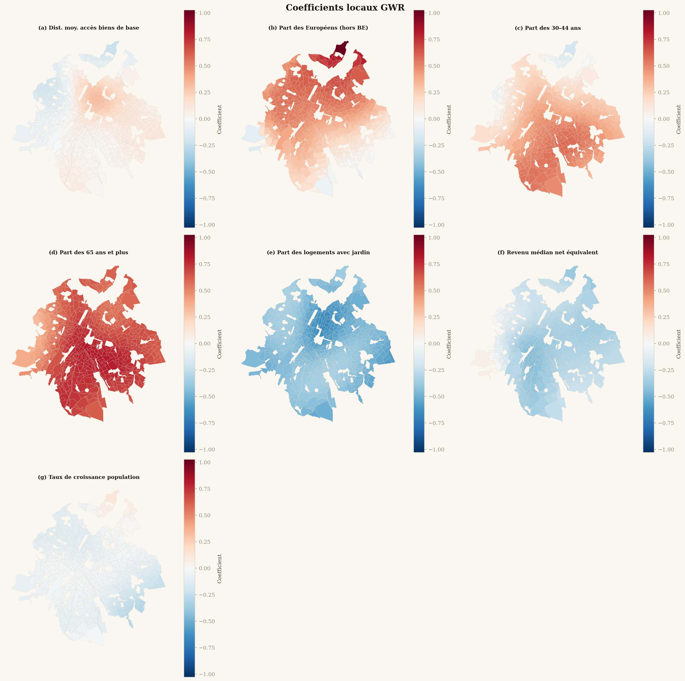

Introduction
En 1995, le sociologue américain Robert Putnam alarmait sur le déclin des liens sociaux et de l'engagement civique aux États-Unis. Dans son essai Bowling Alone, l'auteur soulignait l'importance du tissu social pour la résilience d'une société — du taux de pauvreté à la consommation de drogue en passant par le niveau de santé.
La même année, une vague de chaleur sans précédent frappait Chicago et entraînait un nombre de morts inattendu et déstabilisant. La part anormalement élevée de personnes âgées vivant seules parmi les victimes interpella le sociologue Eric Klinenberg, qui publia une analyse sociologique de l'événement mettant en évidence le lien entre mortalité et isolement social.
« La solidité d'une population ne peut être mesurée qu'à des moments extraordinaires — mais le délitement de la cohésion sociale détériore de nombreux indicateurs permanents du bien-être général. »
Si ces analyses datent et concernent les États-Unis, il est très probable que les mêmes conclusions s'appliquent à l'Europe de 2026. Une récente étude de la Commission Européenne documente ces phénomènes dans les 27 pays de l'Union : un peu plus d'un Européen sur dix se sent seul, ce chiffre variant de moins de 10 % en Espagne à 20 % en Grèce (Schnepf, D'Hombres & Mauri, 2024).
(Commission Européenne, 2024)
en Grèce
analysés à Bruxelles
Cependant, plus qu'une caractéristique culturelle à l'échelle d'une nation, l'isolement social dépend surtout de l'environnement local immédiat. Comme le montra très bien Klinenberg à Chicago, deux quartiers pourtant très proches peuvent avoir un tissu social très différent et résister différemment à des événements dramatiques.
Lorsqu'il n'est pas possible de recourir à des enquêtes, de nombreuses études utilisent le taux de personnes vivant seules comme proxy de l'isolement social (Fritsch, Riederer & Seewann, 2023 ; Burlina & Rodríguez-Pose, 2023). Si vivre seul ne veut pas nécessairement dire être isolé, cela constitue néanmoins un facteur de risque à prendre en compte (Lykes & Kemmelmeier, 2013).
C'est ce qu'ont entrepris récemment Benassi et Iglesias-Pascual (2025), qui ont analysé la distribution spatiale des personnes vivant seules dans les quatre plus grandes villes espagnoles. Leurs résultats montrent que les liens entre isolement et revenus, immigration européenne ou structure démographique varient d'une ville à l'autre et, surtout, au sein des villes elles-mêmes. Le reste de cet article adapte cette méthodologie à Bruxelles, à partir des données ouvertes de perspective.brussels.
Source de données
Le service de planification de la Région Bruxelles-Capitale, perspective.brussels, met à disposition sur monitoringdesquartiers.brussels plus de cent indicateurs sur les trois dernières décennies, déclinés pour trois niveaux géographiques : communes, quartiers et secteurs statistiques. Pour la présente analyse, les données suivantes ont été utilisées au niveau du secteur statistique (2021) :
- Part des isolés de 30 ans et plus dans le total des ménages privés (variable dépendante)
- Distance moyenne d'accès aux 4 biens de base (pain, viande, alimentation, pharmacie)
- Part de la population originaire de l'Europe des 14 (hors Belgique)
- Part des 30–44 ans dans la population
- Part des 65 ans et plus dans le total des ménages privés
- Part des logements ayant accès à un jardin privé
- Revenu équivalent médian après impôts
- Taux annuel moyen de croissance de la population (2016–2021)

Comme le montre la matrice de corrélation ci-dessous, certaines variables sont très fortement corrélées — notamment le taux de végétalisation avec le revenu et la distance aux biens de base. Nous avons néanmoins conservé ces indicateurs car ils représentent des prismes différents sur la qualité de vie locale.

L'isolement à Bruxelles
L'isolement des plus de 30 ans est particulièrement élevé dans le sud du Pentagone, notamment dans le quartier des Marolles, et dans les communes de Saint-Gilles, Ixelles et Etterbeek. Ces quartiers sont connus pour accueillir une population jeune et aisée, en particulier autour des institutions européennes.

L'isolement à Bruxelles semble donc surtout lié à une population aisée et dynamique, associée aux quartiers tendance et attractifs. Pour documenter plus en détail cette hypothèse, la même méthodologie que Benassi et Iglesias-Pascual (2025) peut être appliquée pour analyser la relation entre l'isolement et les autres variables retenues.
Régression linéaire (OLS)
La régression linéaire est une méthode statistique classique permettant de trouver les coefficients des variables qui expliquent au mieux les résultats. Ces coefficients sont communs à toutes les observations : la méthode minimise la somme des différences entre valeur prédite et valeur réelle. Pour faciliter la comparaison entre variables, chacune a été standardisée autour d'une moyenne de 0 et d'un écart-type de 1.

Le modèle OLS attribue un coefficient significatif à 9 des 13 variables et explique un R² de 73 % de la variabilité de l'isolement. Cependant, avant d'aller plus loin, deux problèmes méritent d'être signalés : la non-normalité des résidus et la multicolinéarité entre certaines variables.
De plus, un test de Moran's I révèle la présence d'autocorrélation spatiale : si un secteur présente une forte part de personnes isolées, ses voisins auront toutes les chances d'en présenter une aussi. L'OLS ne prenant pas en compte cette dépendance géographique, une autre méthode s'impose.
Régression spatiale (GWR)
La Geographical Weighted Regression (GWR) prend en compte la dépendance entre un secteur et ses voisins en produisant un coefficient par variable et par secteur. Ce coefficient représente l'association locale entre le taux d'isolement et chaque variable. Un coefficient élevé et positif pour le revenu dans un quartier signifie que l'isolement dans ce quartier s'explique davantage par la présence de hauts revenus que dans les quartiers voisins.

Toutes les variables sont significativement associées à la part d'individus isolés. La variable avec la plus forte association est la part de personnes de plus de 65 ans, positive partout — ce qui s'explique par le lien structurel entre vieillissement et vie seule. La part de logements avec jardin privé est également fortement liée, mais négativement, en particulier dans les quartiers denses du centre.

Comme le montrent les cartes de coefficients, l'effet des variables varie considérablement d'un quartier à l'autre. L'influence de la part de personnes issues de l'Europe des 14 est négative à la périphérie est et ouest de la ville — où les expatriés s'installent davantage en famille dans des quartiers résidentiels — tandis qu'elle est positive dans le centre, le sud et le nord. On remarque une association exceptionnellement élevée dans les quartiers nord, probablement du fait des expatriés travaillant pour l'OTAN.

À travers ces cartes, deux histoires d'isolement se dégagent.
Au sud de Bruxelles, l'isolement est fortement associé aux populations des 30–44 ans et des 65 ans et plus, peu lié à l'accès aux biens de base, et reste corrélé à des revenus relativement faibles. L'isolement y est probablement le fait de personnes dynamiques socialement, prêtes à sacrifier une partie de leur revenu pour habiter des quartiers centraux riches en aménités. Le niveau de vulnérabilité de ces personnes est plus faible ; lors d'événements climatiques extrêmes, des politiques de prévention et d'information devraient suffire.
Dans les quartiers précarisés du nord et le long du canal, l'isolement est le fait de personnes âgées, éloignées des biens de base, sans jardin privé — une vulnérabilité particulièrement aiguë en période de canicule.
Au nord de Bruxelles et le long du canal, un autre profil apparaît. L'isolement y est fortement lié à la présence de personnes âgées, à la distance aux biens de base, et à l'absence de jardin privé. L'association avec la croissance de la population est négative. Ces quartiers plus précarisés représentent une population particulièrement vulnérable aux événements extrêmes — notamment les canicules — et nécessitent des politiques plus actives : passages de voisinage, distribution d'eau, accès à des espaces réfrigérés.
Conclusion
L'isolement est important à mesurer car il est lié à de nombreuses vulnérabilités économiques, sociales et sanitaires. En particulier, les crises climatiques présentent moins de risques dans les quartiers avec un tissu social robuste.
L'analyse spatiale de l'isolement est difficile à conduire avec les méthodes statistiques traditionnelles, qui ne prennent pas en compte les dépendances entre secteurs géographiques. À l'image de Benassi et Iglesias-Pascual (2025) pour les métropoles espagnoles, la GWR permet de mieux caractériser l'isolement à Bruxelles, quartier par quartier.
Si la GWR confirme que l'association entre isolement, personnes âgées et accès à un jardin privé est présente sur tout le territoire bruxellois, elle met en évidence des différences marquées entre quartiers : la part de personnes isolées est particulièrement sensible à la distance aux biens de base dans les quartiers d'affaires du centre et du nord, tandis que la présence d'expatriés européens joue différemment selon les zones.
Enfin, la GWR décrit deux dynamiques d'isolement à Bruxelles : l'une, au sud, liée à des populations actives dans des quartiers bien connectés, avec un niveau de vulnérabilité plus faible ; l'autre, au nord et le long du canal, associée à des personnes âgées précarisées, dans des zones moins bien desservies, qui représentent la priorité pour des politiques urbaines actives de lutte contre l'isolement.
Références
- Audard, F., Le Campion, G. & Pierson, J. (2024). La régression géographiquement pondérée : GWR. Rzine. doi:10.48645/wk1m-hg05
- Benassi, F. & Iglesias-Pascual, R. (2025). A local regression approach to studying single-person households. Annals of Operations Research. doi:10.1007/s10479-025-06595-8
- Benjamini, Y. & Hochberg, Y. (1995). Controlling the false discovery rate. Journal of the Royal Statistical Society Series B, 57(1), 289–300.
- Burlina, C. & Rodríguez-Pose, A. (2023). Alone and lonely. Environment and Planning A, 55(8), 2067–2087.
- Fotheringham, A. S., Brunsdon, C. & Charlton, M. (2003). Geographically weighted regression. John Wiley & Sons.
- Fritsch, N.-S., Riederer, B. & Seewann, L. (2023). Living alone in the city. Applied Research in Quality of Life, 18(4), 2065–2087.
- Kim, Y.-K. & Kim, D. (2024). Role of social infrastructure in social isolation. Land, 13, 1260.
- Klinenberg, E. (2022). Canicule. Chicago, été 1995. Éditions deux-cent-cinq.
- Lykes, V. A. & Kemmelmeier, M. (2013). What predicts loneliness? Journal of Cross-Cultural Psychology.
- Schnepf, S. V., D'Hombres, B. & Mauri, C. (2024). Loneliness in Europe. Population Economics. doi:10.1007/978-3-031-66582-0